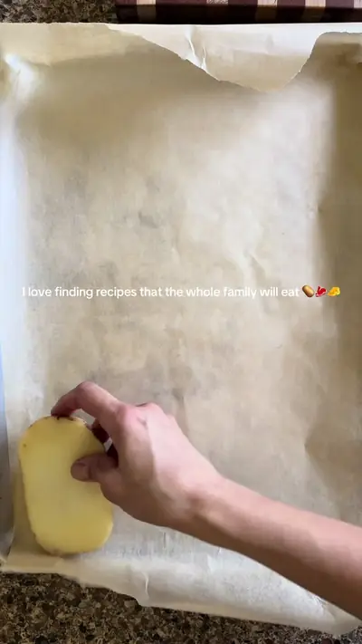

It’s so incredibly easy and quick

Ingredients
- 300 g ground beef (or half beef / half lamb)
- 1 onion, chopped
- 3 garlic clove, minced
- 150 g tomato purée or crushed tomatoes
- 3 tsp tomato concentrate (paste)
- 1 pinch of nutmeg (optional)
- 3 tablespoons of each oregano and paprika Fresh parsley added before finishing For the béchamel
- 3 tablespoons butter
- 2.5 tablespoons flour
Steps
- Cut the potatoes into slices about 0.5 cm thick.
- Spread them on a baking sheet, brush with olive oil and bake at 350 for 20-30 minutes until golden brown.
- Layer and bake at 350 for 30 minutes!
Recipe text as written by @mountain_mothering on TikTok. Open original